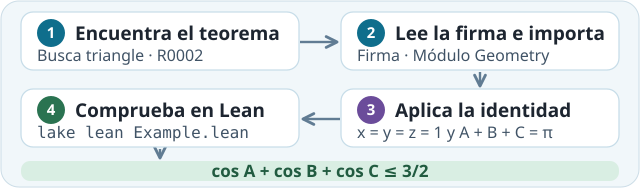
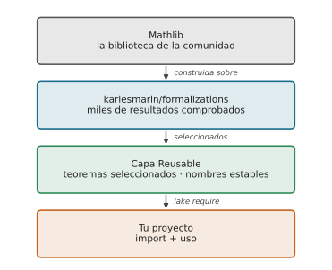
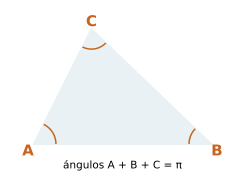
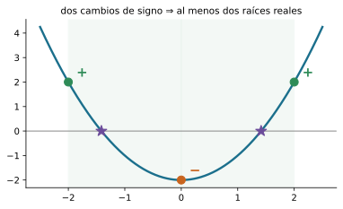
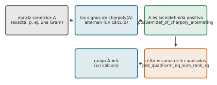

La capa Reusable: guía práctica
Teoremas comprobados por máquina que puedes usar en tus propias pruebas de Lean 4: desde instalarlos hasta usar cada uno de ellos.
🎯Qué podrás hacer
Al terminar esta guía tendrás un proyecto de Lean que usa la capa Reusable, y sabrás encontrar, leer, aplicar y combinar cualquiera de sus teoremas. No hace falta leer sus pruebas: Lean ha comprobado cada una, y tú usas su enunciado como usarías un teorema de un libro.
La capa sirve cuando Mathlib no tiene (todavía) el enunciado que necesitas, o lo tiene en una forma incómoda de aplicar. Tres cosas que hace por ti, todas resueltas en esta guía:
- 🔢 Contar raíces reales de un polinomio con unos pocos cambios de signo, sin calcular las raíces (Receta 2).
- ✅ Certificar que una forma cuadrática es suma de k cuadrados: dos teoremas convierten una comprobación de signos en la descomposición (Receta 4).
- 📐 Demostrar una desigualdad clásica en dos líneas cuando se tiene la identidad adecuada (Receta 1).
Todo el método en una frase. Busca el teorema, dale sus argumentos, demuestra sus hipótesis y quédate con la parte de su conclusión que necesitas. El resto de la guía es esa frase en detalle.
De la ficha a la prueba en Lean
¿Puedes demostrar que cos A + cos B + cos C ≤ 3/2 para los ángulos de un triángulo? Este recorrido te lleva de la búsqueda a la prueba.

- Encuentra el teorema. Busca
triangleen la vitrina y abre la identidad de Wolstenholme (ficha R0002). - Lee la firma y copia el import. Empieza el fichero con
import Formalizations.Reusable.Geometryyopen Formalizations.Reusable. En la firma,hes la prueba que debes aportar de que A + B + C = π. - Aplica la identidad. La Receta 1 usa los dos
cuadrados para demostrar la desigualdad general. En el Ejemplo 2,
da los valores x = y = z = 1 y la prueba
h. La identidad expresa 3 − 2(cos A + cos B + cos C) como suma de dos cuadrados. - Comprueba la prueba. Pega el Ejemplo 2 en
Example.lean. La prueba usasq_nonnegpara cada cuadrado ynlinarithpara deducir la cota. Ejecutalake lean Example.leanen tu proyecto configurado. Si el comando termina correctamente, Lean ha aceptado la prueba.
🧱Qué es la capa Reusable

El repositorio karlesmarin/formalizations reúne miles de resultados comprobados por máquina, casi todos escritos
para mis artículos de investigación. La capa Reusable es una parte pequeña y seleccionada: teoremas útiles
fuera del artículo del que vienen, con nombres estables de la forma Formalizations.Reusable.<nombre>. La versión
v0.15.0, la que describe esta edición, tiene 82 en 9 áreas.
Cada entrada de la capa:
- es un teorema demostrado en el archivo: la capa lo vuelve a exportar; no se copia ni se reescribe ninguna prueba;
- depende solo de los axiomas estándar de Lean (
propext,Classical.choice,Quot.sound), comprobado en cada versión; - tiene un papel: 🔌
API, un lema pensado para usarse dentro de otras pruebas, o 🏛️showcase, un teorema clásico, completo en sí mismo, que se consulta más que se importa; - tiene una ficha en la vitrina: el enunciado en palabras, la firma exacta en Lean, el import que necesita, un ejemplo compilado, de dónde viene y qué axiomas usa.
Lo que no es: no sustituye a Mathlib (se construye sobre Mathlib y fija una versión concreta de ella) y no es una colección de tácticas. Es un conjunto de teoremas.
Estabilidad. Los nombres bajo Formalizations.Reusable no se retiran dentro de una serie principal. Si un enunciado
tiene que cambiar de forma incompatible, el nombre antiguo se queda como alias obsoleto durante dos versiones.
🧰Antes de empezar
Necesitas:
- Lean 4 con
elan, el gestor de versiones de Lean. Si nunca has instalado Lean, sigue https://lean-lang.org/install/; son unos minutos e instala también el soporte para VS Code. - git.
- Unos 5 GB de disco: Mathlib, ya compilada, se descarga una vez.
- Lean básico: qué significan
theorem,example,by,exactyhave. Si estas palabras son nuevas, los primeros capítulos de Mathematics in Lean (https://leanprover-community.github.io/mathematics_in_lean/) son el mejor comienzo; vuelve aquí después.
🚀Instalar la capa
4.1 En un proyecto nuevo, paso a paso
Crear el proyecto.
lake +leanprover/lean4:v4.35.0 new myproject std.toml
cd myproject
Usa la plantilla estándar (std.toml), no math. La plantilla math añade su propia Mathlib, fijada en una
versión distinta de la que usa esta capa, y acabarías con dos Mathlib que no concuerdan. Mathlib entra en tu proyecto a
través de esta capa.
Declarar la dependencia. Abre lakefile.toml y añade al final:
[[require]]
name = "formalizations"
git = "https://github.com/karlesmarin/formalizations"
rev = "v0.15.0"
rev fija la versión: tu proyecto seguirá funcionando igual hasta que la cambies.
De dónde salen los valores. Esta edición de la guía se genera a partir de la versión v0.15.0: su etiqueta va
en rev, y su versión de Lean (leanprover/lean4:v4.35.0, el fichero lean-toolchain en la etiqueta), en la línea de
lake new. Para una versión posterior, toma su etiqueta de https://github.com/karlesmarin/formalizations/releases y el lean-toolchain de esa etiqueta; la
vitrina da siempre los dos.
Descargar.
lake update
Descarga la capa y Mathlib, y trae Mathlib ya compilada. La primera vez tarda (son varios gigabytes); las siguientes actualizaciones son rápidas.
Un primer fichero. Crea Example.lean en la carpeta del proyecto:
import Formalizations.Reusable.NumberTheory
open Formalizations.Reusable
#check wolstenholme_choose_modEq
Comprobarlo.
lake lean Example.lean
Lean escribe el enunciado del teorema: tu proyecto está listo. En Linux y Windows, Lake descarga la capa ya compilada; en macOS la compila una vez.
Evita un lake build a secas en un proyecto de la plantilla estándar: su objetivo por defecto es un ejecutable, y
construirlo compila a código nativo cada módulo de Mathlib importado, lo que lleva horas. Lo que quieres es
lake lean <fichero>; si tus ficheros forman parte de una biblioteca de tu proyecto, lake build <biblioteca> hace lo
mismo.
4.2 En un proyecto que ya tienes
Si tu proyecto usa las mismas versiones de Lean y Mathlib (las que dan lean-toolchain y lake-manifest.json del repositorio en la etiqueta que fijes; para
v0.15.0, Lean v4.35.0 y el commit f0b4c81 de Mathlib), añade el bloque [[require]]
del paso 1 a su lakefile.toml (o la línea require equivalente en un lakefile.lean) y ejecuta lake update. Si
usa otra Mathlib, Lake avisará del conflicto: o pasas tu proyecto a estas versiones, o esperas a una versión de la capa
para las tuyas.
4.3 Trabajar en VS Code
Abre la carpeta del proyecto en VS Code con la extensión de Lean 4. Al abrir Example.lean, el panel infoview
muestra, en la posición del cursor, lo que queda por demostrar y el tipo de lo que hay bajo el cursor. Al pasar el
ratón sobre un nombre como wolstenholme_choose_modEq aparece su enunciado; Ctrl-clic (Cmd-clic) lleva a donde está
definido. Es la forma más rápida de leer un teorema mientras lo usas.
✍️Tu primer teorema, palabra por palabra
Sustituye la línea #check de Example.lean por:
example : Nat.choose 13 6 ≡ 1 [MOD 7 ^ 3] :=
(wolstenholme_choose_modEq 7 (by norm_num) (by norm_num)).1
Vuelve a ejecutar lake lean Example.lean. Si no sale nada, Lean ha aceptado la prueba. Pieza a pieza:
example : …enuncia algo sin darle nombre. Aquí: el coeficiente binomial C(13, 6) = 1716 es congruente con 1 módulo 7³ = 343.wolstenholme_choose_modEqes el teorema de la capa (Wolstenholme, 1862): para un primo p ≥ 5, C(2p − 1, p − 1) ≡ 1 (mod p³) y C(2p, p) ≡ 2 (mod p³).7es el valor de p. Lean pide entonces las dos hipótesis del teorema: que 7 es primo y que 5 ≤ 7. Cada(by norm_num)demuestra una de ellas calculando.- El teorema da dos congruencias unidas por «y»;
.1toma la primera, que es justo nuestro enunciado (2·7 − 1 = 13 y 7 − 1 = 6).
🔎Encontrar el teorema que necesitas
La vitrina (https://karlesmarin.github.io/blueprints/reusable/) lista todos los teoremas con un buscador. Busca con palabras («rank», «real roots», «triangle», «congruence») o recórrela por áreas. Cada ficha muestra:
- el enunciado en palabras y la firma exacta en Lean;
- el import: el módulo que escribes después de
import(el área del teorema, por ejemploFormalizations.Reusable.LinearAlgebra);import Formalizations.Reusableimporta todas las áreas a la vez; - un ejemplo compilado: código que Lean comprobó en esta versión, listo para copiar;
- los axiomas que usa, la versión (con sus versiones de Lean y de Mathlib) y el artículo o la fuente clásica de la que viene.
El manifiesto Formalizations/Reusable/manifest.toml tiene la misma información como datos, una entrada por
teorema, por si prefieres buscar con tus propios programas. La sección 10 de esta guía lista todos los teoremas
por área.
Desde Lean puedes preguntar directamente:
#check psd_quadForm_eq_sum_rank_sq -- su enunciado
#print axioms psd_quadForm_eq_sum_rank_sq -- en qué axiomas se apoya
Leer una firma
theorem psd_quadForm_eq_sum_rank_sq {n : Type*} [Fintype n] [DecidableEq n] {A : Matrix n n ℝ}
(hA : A.PosSemidef) {k : ℕ} (hk : A.rank = k) :
∃ v : Fin k → (n → ℝ), ∀ u, u ⬝ᵥ (A *ᵥ u) = ∑ i, (v i ⬝ᵥ u) ^ 2- Los argumentos entre llaves
{n},{A},{k}son implícitos: Lean los deduce de los demás; no los escribes. - Los argumentos entre corchetes
[Fintype n]son instancias: Lean las encuentra solo para los tipos habituales (Fin 3,ℕ,ℝ, …). - Los argumentos entre paréntesis
(hA : …),(hk : …)son los que das tú: aquí, una prueba de queAes semidefinida positiva y una prueba de que su rango esk. - Lo que sigue a los últimos dos puntos es la conclusión: lo que obtienes.
🛠️Todas las formas de usar un teorema
Un mismo teorema puede entrar en una prueba de varias maneras. Aquí van con un solo teorema, matrix_rank_add_le
(el rango de una suma es como mucho la suma de los rangos).
| Táctica | Úsala cuando | Ejemplo |
|---|---|---|
exact |
el objetivo es justo la conclusión | exact matrix_rank_add_le A B |
have |
quieres la conclusión como dato para después | have h := matrix_rank_add_le A A |
refine … ?_ |
algunas hipótesis se demuestran después | Receta 2 |
rw, simpa using |
la conclusión es una ecuación, o casi tu objetivo | Receta 6 |
.1, .2, obtain |
la conclusión es un «y» o un «existe» | Sección 5 |
| combinar | la salida de un teorema es la entrada de otro | Receta 4 |
Directamente, cuando lo que quieres demostrar es su conclusión — exact:
example (A B : Matrix (Fin 2) (Fin 3) ℚ) : (A + B).rank ≤ A.rank + B.rank :=
matrix_rank_add_le A B
Como un dato que después usas — have y una táctica que termina:
example (A : Matrix (Fin 2) (Fin 3) ℚ) : (A + A).rank ≤ 2 * A.rank := by
have := matrix_rank_add_le A A
omega
Dejando argumentos para después — refine con ?_: cada ?_ se convierte en un objetivo nuevo (la Receta 2 lo
hace).
Cuando la conclusión es una ecuación — rw reescribe con ella; simp only [...] o simpa using ... dejan que
Lean ajuste pequeñas diferencias de forma (Receta 6).
Particularizando — da valores a las variables (wolstenholme_choose_modEq 7 …) y toma una parte de un «y» con
.1 / .2 (sección 5), o de un «existe» con obtain ⟨v, hv⟩ := ….
Combinando dos teoremas — la salida de uno es la hipótesis del otro (Receta 4).
Dentro de una prueba más larga que usa Mathlib — un teorema de la capa es un teorema de Lean como cualquier otro: combínalo con lemas de Mathlib y con cualquier táctica.
🧪Seis recetas
Cada receta tiene las mismas partes: 🧩 el problema, 📜 el teorema, 💻 el código, ✅ lo que Lean comprobó y 🎯 una
variación para probar. Todo el código está en el fichero
ReusableManualDemo.lean, compilado con la versión v0.15.0; pégalo
después de open Formalizations.Reusable Matrix Polynomial en un fichero que importe Formalizations.Reusable.
| Área | Teorema | Obtienes | |
|---|---|---|---|
| 1 | 📐 Geometría | wolstenholme_defect_eq_sq_add_sq |
una desigualdad para todo triángulo |
| 2 | 🧬 Polinomios | card_roots_toFinset_ge_of_alternating_sign |
una cota inferior de raíces reales |
| 3 | 🧬 Polinomios | newton_inequality_esymm_roots |
restricciones sobre los coeficientes |
| 4 | 🔢 Álgebra lineal | posSemidef_of_charpoly_alternating, psd_quadForm_eq_sum_rank_sq |
un certificado de suma de cuadrados |
| 5 | 🔣 Teoría de números | wolstenholme_choose_modEq |
una congruencia módulo p³ |
| 6 | 🔢 Álgebra lineal | matrix_rank_add_rank_le_rank_fromBlocks |
una cota de rango |

🧩El problema. Para los ángulos A, B, C de un triángulo y cualesquiera reales x, y, z: 2yz cos A + 2zx cos B + 2xy cos C ≤ x² + y² + z² (desigualdad de Wolstenholme).
📜El teorema. wolstenholme_defect_eq_sq_add_sq (ficha R0002) dice por qué: cuando A + B + C = π, la
diferencia entre los dos lados es exactamente una suma de dos cuadrados.
💻El código.
example (x y z A B C : ℝ) (h : A + B + C = Real.pi) :
2 * y * z * Real.cos A + 2 * z * x * Real.cos B + 2 * x * y * Real.cos C
≤ x ^ 2 + y ^ 2 + z ^ 2 := by
have key := wolstenholme_defect_eq_sq_add_sq x y z A B C h
nlinarith [sq_nonneg (x - z * Real.cos B - y * Real.cos C),
sq_nonneg (z * Real.sin B - y * Real.sin C)]
✅Lo que Lean comprobó. have key := … pone la identidad entre los datos; nlinarith la combina con que los dos
cuadrados son no negativos. La desigualdad vale para todo triángulo y todos x, y, z.
🎯Pruébalo. Toma x = y = z = 1 para obtener cos A + cos B + cos C ≤ 3/2. El Ejemplo 2 comprueba este caso particular en Lean.

🧩El problema. Demostrar que un polinomio tiene al menos n raíces reales distintas sin encontrarlas.
📜El teorema. card_roots_toFinset_ge_of_alternating_sign (ficha R0011): si un polinomio real no nulo cambia de
signo entre puntos consecutivos de n + 1 puntos crecientes, tiene al menos n raíces reales distintas, una en cada hueco.
💻El código. Para X² − 2 en los puntos −2, 0, 2:
example : 2 ≤ ((X ^ 2 - C 2 : ℝ[X]).roots.toFinset.card) := by
have hne : (X ^ 2 - C 2 : ℝ[X]) ≠ 0 := by
intro h
have := congrArg (Polynomial.eval 0) h
simp at this
refine card_roots_toFinset_ge_of_alternating_sign _ hne 2 ![-2, 0, 2] ?_ ?_
· refine Fin.strictMono_iff_lt_succ.2 fun i => ?_
fin_cases i <;> norm_num
· intro i
fin_cases i <;> norm_num
✅Lo que Lean comprobó. Las tres cosas que das tú: el polinomio no es cero (en 0 vale −2), los puntos −2 < 0 < 2 crecen, y los valores en puntos consecutivos tienen signos opuestos: 2·(−2) < 0 y (−2)·2 < 0.
🎯Pruébalo. Para X³ − 3X toma los puntos −2, −1, 1, 2 (valores −2, 2, −2, 2) y n = 3: tres raíces reales.
🧩El problema. Si todas las raíces de un polinomio son reales, sus coeficientes no pueden ser cualesquiera.
📜El teorema. newton_inequality_esymm_roots (ficha R0015), las desigualdades de Newton: para un polinomio real
mónico con todas sus raíces reales (se descompone sobre ℝ), las funciones simétricas elementales eₖ de las raíces
cumplen eₖ² · C(n,k−1) C(n,k+1) ≥ eₖ₋₁ eₖ₊₁ · C(n,k)².
💻El código. El caso k = 1, para todo grado n ≥ 2:
example (p : ℝ[X]) (hp : p.Splits) (hm : p.Monic) (h2 : 2 ≤ p.natDegree) :
(p.roots.esymm 1) ^ 2 * ((p.natDegree.choose 0 : ℝ) * (p.natDegree.choose 2 : ℝ))
≥ (p.roots.esymm 0) * (p.roots.esymm 2) * ((p.natDegree.choose 1 : ℝ)) ^ 2 :=
newton_inequality_esymm_roots hp hm le_rfl h2
✅Lo que Lean comprobó. El teorema pide k ≥ 1 (aquí le_rfl, porque k = 1) y k + 1 ≤ n (aquí h2). Con
e₀ = 1, e₁ = suma de las raíces y e₂ = suma de los productos de dos en dos, se lee (n − 1) e₁² ≥ 2n e₂.
🎯Pruébalo. Para un polinomio de grado dos X² + bX + c con raíces reales, es b² ≥ 4c: el discriminante no es negativo.

🧩El problema. Tienes una matriz simétrica A, conocida de forma exacta (por ejemplo una matriz de Gram encontrada por un programa), y quieres una prueba de que su forma cuadrática uᵀAu es suma de exactamente k cuadrados de formas lineales.
📜Los teoremas. Dos pasos:
posSemidef_of_charpoly_alternating(ficha R0032): si los coeficientes del polinomio característico de una matriz real simétrica alternan de signo, la matriz es semidefinida positiva. Comprobar los signos de un número finito de racionales es un cálculo exacto.psd_quadForm_eq_sum_rank_sq(ficha R0033): una matriz semidefinida positiva de rango k tiene una forma cuadrática que es suma de exactamente k cuadrados.
💻El código.
example {n : Type*} [Fintype n] [DecidableEq n] (A : Matrix n n ℝ) (hA : A.IsSymm)
(halt : ∀ k ≤ A.charpoly.natDegree, 0 ≤ (-1 : ℝ) ^ (A.charpoly.natDegree - k) * A.charpoly.coeff k)
(k : ℕ) (hk : A.rank = k) :
∃ v : Fin k → (n → ℝ), ∀ u, u ⬝ᵥ (A *ᵥ u) = ∑ i, (v i ⬝ᵥ u) ^ 2 :=
psd_quadForm_eq_sum_rank_sq (posSemidef_of_charpoly_alternating hA halt) hk
✅Lo que Lean comprobó. El primer teorema convierte la condición de signos halt en que la matriz es
semidefinida positiva; el segundo convierte eso y el rango en los k cuadrados. Es la cadena que uso en mi propia
investigación sobre sumas de cuadrados: un programa encuentra un candidato, un cálculo exacto comprueba signos y rango,
y estos dos teoremas convierten la conclusión en un teorema.
🎯Pruébalo. Para la matriz ((2, 1), (1, 2)) el polinomio característico es X² − 4X + 3: los signos +, −, + alternan y el rango es 2, así que la forma 2u₁² + 2u₁u₂ + 2u₂² es suma de dos cuadrados.
El ejemplo de la sección 5 es esta receta: wolstenholme_choose_modEq (ficha R0026) con p = 7.
🎯Pruébalo. Con p = 11 y la segunda congruencia .2: C(22, 11) ≡ 2 (mod 11³).
🧩El problema. Acotar el rango de una matriz dada por bloques, sin calcularlo.
📜El teorema. matrix_rank_add_rank_le_rank_fromBlocks (ficha R0023): sobre un cuerpo, el rango de una matriz
triangular superior por bloques [[A, B], [0, D]] es al menos rango A + rango D, sea cual sea B.
💻El código.
example (B : Matrix (Fin 2) (Fin 2) ℚ) :
4 ≤ (fromBlocks (1 : Matrix (Fin 2) (Fin 2) ℚ) B 0 (1 : Matrix (Fin 2) (Fin 2) ℚ)).rank := by
have h := matrix_rank_add_rank_le_rank_fromBlocks (1 : Matrix (Fin 2) (Fin 2) ℚ) B
(1 : Matrix (Fin 2) (Fin 2) ℚ)
simpa only [rank_one, Fintype.card_fin] using h
✅Lo que Lean comprobó. Con bloques identidad en la diagonal, rango A + rango D = 2 + 2 = 4: la matriz 4 × 4 es invertible, sea cual sea la esquina B.
🎯Pruébalo. Cambia el segundo bloque identidad por una matriz de rango 1: la cota pasa a ser 3.
🧭Ejemplos prácticos, de principio a fin
Seis problemas tal como te los encontrarías, resueltos desde la pregunta hasta la prueba comprobada. Cada uno muestra una
forma distinta de trabajar con la capa. Todo el código está en el fichero
ReusableManualPractice.lean, compilado con la versión v0.15.0;
empieza con open Formalizations.Reusable Matrix Polynomial y open scoped Kronecker.
| Quieres demostrar | Usas | La idea | |
|---|---|---|---|
| 1 | una cúbica tiene tres raíces reales | tu propio lema sobre R0011 | construir una vez, reutilizar |
| 2 | cos A + cos B + cos C ≤ 3/2 | R0002 con x = y = z = 1 | particularizar una identidad general |
| 3 | el rango de un producto tensorial 6 × 6 | R0024 | no escribir nunca la matriz |
| 4 | B(7) ≡ 2 (mod 7) | R0031 con n = 0 | reescribir y calcular |
| 5 | C(26, 13) ≡ 2 (mod 13³) | R0026, segunda parte | quedarte con la parte que necesitas |
| 6 | 2 sen(π/3) · 2 sen(2π/3) = 3 | R0006 con n = 3 | dejar que exact_mod_cast arregle las conversiones |
Ejemplo 1 — tu propio lema, y después una cúbica concreta
La pregunta. ¿Tiene X³ − 3X + 1 tres raíces reales? Te encontrarás más preguntas así, de modo que primero escribe un lema tuyo sobre la capa (ficha R0011): cuatro puntos crecientes con signos alternos dan tres raíces reales distintas. Después la cúbica es una línea.
theorem three_real_roots (p : ℝ[X]) (hp : p ≠ 0) (a b c d : ℝ) (h1 : a < b) (h2 : b < c) (h3 : c < d)
(s1 : p.eval a * p.eval b < 0) (s2 : p.eval b * p.eval c < 0) (s3 : p.eval c * p.eval d < 0) :
3 ≤ p.roots.toFinset.card := by
refine card_roots_toFinset_ge_of_alternating_sign p hp 3 ![a, b, c, d] ?_ ?_
· refine Fin.strictMono_iff_lt_succ.2 fun i => ?_
fin_cases i
· simpa using h1
· simpa using h2
· simpa using h3
· intro i
fin_cases i
· simpa using s1
· simpa using s2
· simpa using s3
example : 3 ≤ ((X ^ 3 - C 3 * X + 1 : ℝ[X]).roots.toFinset.card) := by
have hne : (X ^ 3 - C 3 * X + 1 : ℝ[X]) ≠ 0 := by
intro h
have := congrArg (Polynomial.eval 0) h
simp at this
exact three_real_roots _ hne (-2) 0 1 2 (by norm_num) (by norm_num) (by norm_num)
(by norm_num) (by norm_num) (by norm_num)
Qué ha pasado. three_real_roots convierte el teorema general (con los puntos dados como un vector ![a, b, c, d])
en un enunciado con hipótesis sencillas a < b, eval a p * eval b p < 0, … fáciles de dar. Para la cúbica,
norm_num evalúa el polinomio en −2, 0, 1, 2 (valores −1, 1, −1, 3) y comprueba cada hipótesis. Lección: si vas a
usar un teorema muchas veces, envuélvelo una vez en la forma que tienen tus problemas.
Ejemplo 2 — una cota clásica para todo triángulo
La pregunta. Demostrar cos A + cos B + cos C ≤ 3/2 para los ángulos de cualquier triángulo.
example (A B C : ℝ) (h : A + B + C = Real.pi) : Real.cos A + Real.cos B + Real.cos C ≤ 3 / 2 := by
have key := wolstenholme_defect_eq_sq_add_sq 1 1 1 A B C h
nlinarith [key, sq_nonneg (1 - 1 * Real.cos B - 1 * Real.cos C), sq_nonneg (1 * Real.sin B - 1 * Real.sin C)]
Qué ha pasado. La identidad de la ficha R0002 vale para todos x, y, z; con x = y = z = 1 dice que
3 − 2(cos A + cos B + cos C) es suma de dos cuadrados. nlinarith solo tiene que añadir los dos datos «un cuadrado es
≥ 0». Lección: una identidad general es una familia de resultados; elegir los valores es la prueba.
Ejemplo 3 — el rango de un producto tensorial, sin la matriz
La pregunta. ¿Cuál es el rango del producto de Kronecker de las identidades 2 × 2 y 3 × 3?
example : ((1 : Matrix (Fin 2) (Fin 2) ℚ) ⊗ₖ (1 : Matrix (Fin 3) (Fin 3) ℚ)).rank = 6 := by
rw [matrix_rank_kronecker]
simp [rank_one]
Qué ha pasado. rw [matrix_rank_kronecker] (ficha R0024) cambia el rango de la matriz 6 × 6 por el producto de
dos rangos, y simp sabe que una identidad de tamaño n tiene rango n. Lección: reescribe primero con el teorema y
deja que simp termine el cálculo pequeño.
Ejemplo 4 — números de Bell módulo un primo
La pregunta. El número de Bell B(7) cuenta las particiones de un conjunto de 7 elementos (vale 877). ¿Cuánto vale módulo 7?
example : ((Nat.bell 7 : ℕ) : ZMod 7) = 2 := by
have : Fact (Nat.Prime 7) := ⟨by norm_num⟩
have h := touchard_bell_add_prime 7 0
rw [zero_add, Nat.bell_zero, zero_add, Nat.bell_one] at h
rw [h]
rfl
Qué ha pasado. La congruencia de Touchard (ficha R0031) necesita saber que 7 es primo: lo da la línea
have : Fact …. Con n = 0 dice B(7) = B(0) + B(1) en ZMod 7; al reescribir B(0) = B(1) = 1 queda 1 + 1 = 2, que
comprueba rfl. Lección: algunos teoremas piden una hipótesis como instancia entre corchetes; se da con
have : Fact ….
Ejemplo 5 — un coeficiente binomial central módulo p³
La pregunta. ¿Es C(26, 13) = 10 400 600 congruente con 2 módulo 13³ = 2197?
example : Nat.choose 26 13 ≡ 2 [MOD 13 ^ 3] :=
(wolstenholme_choose_modEq 13 (by norm_num) (by norm_num)).2
Qué ha pasado. El teorema de Wolstenholme (ficha R0026) da dos congruencias unidas por «y»; .2 toma la segunda.
Lean comprueba solo que 2 · 13 = 26. Lección: .1 y .2 eligen la mitad de un «y» que necesitas.
Ejemplo 6 — un producto trigonométrico exacto
La pregunta. Calcular de forma exacta 2 sen(π/3) · 2 sen(2π/3).
example : ∏ k ∈ Finset.Ico (1 : ℕ) 3, 2 * Real.sin (k * Real.pi / 3) = 3 := by
have h := prod_two_sin_mul_pi_div 3 (by norm_num)
exact_mod_cast h
Qué ha pasado. La ficha R0006 dice que el producto de 2 sen(kπ/n) para k = 1, …, n − 1 es n. El teorema está
enunciado con un natural n convertido en real; exact_mod_cast quita esas conversiones para que el enunciado con
n = 3 coincida con el tuyo. Lección: cuando la única diferencia es una conversión entre ℕ y ℝ, exact_mod_cast (o
push_cast) la salva.
De teoremas a máquinas matemáticas
Una máquina matemática encadena pasos con entradas y salidas explícitas. En la Receta 4, el objetivo es demostrar que la forma cuadrática de A = ((2, 1), (1, 2)) es suma de dos cuadrados.
Planifica el cálculo. Desde el repositorio de Excovery, pide a la mesa de diseño herramientas que reciban una matriz de Gram racional y den información sobre su rango.
python -m excovery disenar planificar --tengo gram_racional --quiero cota_rango
La mesa propone dos comprobaciones según el tipo de entrada y salida, por polinomio característico o por complemento de Schur. Tú ejecutas la herramienta. Registrar cada ficha Reusable es una ampliación futura.
Calcula con aritmética exacta. Ejecuta la comprobación por polinomio característico sobre A.
python -m excovery.charpoly_psd '[[2,1],[1,2]]'
El resultado da simetría, semidefinitud positiva, rango 2 y los coeficientes [1, −4, 3] en grado decreciente.
Comprueba la cadena en Lean. Demuestra la simetría y la alternancia de signos de X² − 4X + 3. De ahí sale la semidefinitud positiva (ficha R0032). El determinante no nulo, 3, da rango 2. Con ambos datos, demuestra que uᵀAu es una suma de dos cuadrados de formas lineales (ficha R0033).
Pon a prueba una hipótesis. La herramienta necesidad de Excovery busca contraejemplos a un enunciado
debilitado que tú modelas. Quita A + B + C = π de la Receta 1 y toma A = B = C = 0 y x = y = z = 1.
La desigualdad se convierte en 6 ≤ 3. Una búsqueda sin contraejemplos solo informa sobre los casos que examinó.
📚Todos los teoremas de la capa, por área
Los 82 teoremas de la versión v0.15.0, en 9 áreas, leídos de su manifiesto. 🔌 marca un lema
API, 🏛️ un teorema showcase; cada nombre enlaza con su ficha, y cada área da la línea que la importa.
import Formalizations.Reusable.Combinatoricsimport Formalizations.Reusable.LinearAlgebraimport Formalizations.Reusable.Analysisimport Formalizations.Reusable.NumberTheoryimport Formalizations.Reusable.Polynomialimport Formalizations.Reusable.GroupTheoryimport Formalizations.Reusable.Geometryimport Formalizations.Reusable.AlgebraicGeometryimport Formalizations.Reusable.MeasureTheory🩺Cuando algo falla
unknown identifier— falta el import o es otro. Mira la línea Import de la ficha, o usaimport Formalizations.Reusablepara todo; escribeopen Formalizations.Reusable(o el nombre completo).type mismatch— tu enunciado se parece al del teorema pero no es igual: un≥escrito como≤, falta pasar deℕaℝ, otro orden de factores. Compáralo con la firma de la ficha;simpa,push_castyring_nfsalvan diferencias pequeñas.failed to synthesize— un argumento entre corchetes ([Fintype n]) que Lean no encuentra para tu tipo; usa un tipo estándar (Fin k) o añade la instancia como hipótesis.- Dos Mathlib, o una primera compilación que no acaba — el proyecto se creó con la plantilla
math, orevapunta a otra versión. Vuelve a crearlo como en la sección 4.1. lake buildtarda horas — usalake lean <fichero>(sección 4.1, paso 4).
📦Versiones, actualizaciones, cómo citar y contacto
- Fija una versión (
rev = "v0.15.0"). Las notas de cada versión listan sus teoremas nuevos (notas de v0.15.0); los nombres se mantienen dentro de una serie principal. - Actualizar: cambia
reva la etiqueta nueva y ejecutalake update. Lee antes las notas de la versión: un alias obsoleto te dice el nombre nuevo. - Archivos precompilados: cada versión adjunta archivos compilados para Linux y Windows, que Lake descarga en lugar de compilar.
- Confianza: la integración continua comprueba, en cada push al repositorio, que cada teorema depende solo de los axiomas
estándar y que los ejemplos de uso compilan;
#print axiomste deja comprobarlo a ti. - Cómo citar: cita el repositorio y la etiqueta de la versión, y el artículo o la fuente clásica que da la ficha.
- Preguntas, errores o un teorema que te gustaría tener: abre una incidencia en https://github.com/karlesmarin/formalizations/issues.
Trabajé con un asistente de IA en esta guía y sus ejemplos; cada ejemplo de Lean que aparece en ella está compilado
con la versión v0.15.0.
🗂️Referencia rápida
lake +leanprover/lean4:v4.35.0 new myproject std.toml # lakefile.toml [[require]] name = "formalizations" git = "https://github.com/karlesmarin/formalizations" rev = "v0.15.0" lake update lake lean Example.lean
Valores de la versión v0.15.0; para una posterior, su etiqueta en releases y su lean-toolchain.
- Vitrina: https://karlesmarin.github.io/blueprints/reusable/
#check nombre— el enunciado#print axioms nombre— los axiomasimport Formalizations.Reusable— todas las áreas
exact t … | el objetivo es la conclusión |
have h := t … | un dato para tácticas posteriores |
refine t … ?_ | las hipótesis pasan a objetivos |
rw [t], simpa using t | ecuaciones, diferencias pequeñas |
(t …).1, obtain | partes de «y» / «existe» |
- { } implícito — Lean lo deduce
- [ ] instancia — Lean la encuentra
- ( ) lo das tú
- tras los últimos : lo que obtienes
unknown identifier→ import /opentype mismatch→ compara con la ficha;simpa,push_castfailed to synthesize→ un tipo estándar comoFin k- compilar tarda horas →
lake lean <fichero>
- Fija
rev: nada cambia hasta que lo cambies - Actualizar: etiqueta nueva en
revylake update - Cita el repositorio, la etiqueta y la fuente de la ficha
- Incidencias: https://github.com/karlesmarin/formalizations/issues